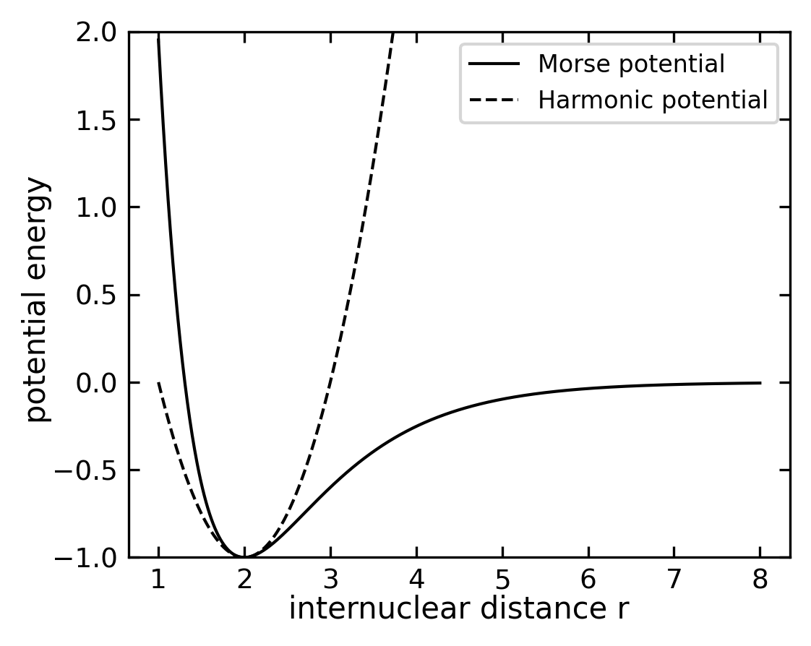

One of the most important examples in all branches of physics is the harmonic oscillator. The potential has the shape of a parabola with the potential energy of
\[
E_{\mathrm{pot}} = \frac{1}{2} D x^2
\]
and the repelling force depends linearly on the deviation from the equilibrium position
\[
F = - \mathrm{grad} \left( E_{\mathrm{pot}} \right) = - D x \mathrm{.}
\]
This harmonic potential is a first approximation for a bonding and non-bonding interaction of two atoms. The potential energy of a diatomic molecule can be described, for example, by the Morse potential
\[
E_{\mathrm{pot}} = D \left( 1 - \mathrm{e}^{-a \left( r - r_e \right)} \right)^2 - D
\]
with the parameters \(D\), \(a\), and \(r_e\).
Code
# ParametersDe =1.0# Well deptha =1.0# Controls widthre =2.0# Equilibrium distance# Generate r valuesr = np.linspace(1.0, 8.0, 1000)# Morse potentialdef morse(r, De, a, re):return De * (1- np.exp(-a*(r-re)))**2-De# Calculate force constant k at equilibrium for harmonic approximationk =2* De * a**2# Second derivative of Morse potential at r=re# Harmonic approximationdef harmonic(r, k, re):return0.5* k * (r-re)**2+ morse(re, De, a, re)# Plotplt.figure(figsize=get_size(10, 8))plt.plot(r, morse(r, De, a, re), 'k-', label='Morse potential')plt.plot(r, harmonic(r, k, re), 'k--', label='Harmonic potential')plt.xlabel('internuclear distance r')plt.ylabel('potential energy ')plt.legend()plt.ylim(-De,2)plt.show()

Figure 1— Plot of the Morse potential and the harmonic approximation
For small oscillations around the equilibrium position \(r_e\), the Morse potential can be approximated by a harmonic potential, as shown in the figure above. In classical mechanics, this corresponds to a two-body system where we use the reduced mass \(m = \frac{m_1m_2}{m_1+m_2}\) of the two atoms oscillating around the equilibrium position (\(x = 0\)) under the influence of a restoring force \(F = - D x\). The system will perform a harmonic oscillation with the frequency
\[
\omega = \sqrt{\frac{D}{m}} \mathrm{.}
\]
In order to discuss a quantum mechanical harmonic oscillator we start with the Schrödinger equation and the harmonic potential \(E_{\mathrm{pot}} = D x^2/2\),
\[
-\frac{\hbar^2}{2m} \frac{\partial^2}{\partial x^2} \psi \left( x \right) + \frac{1}{2} D x^2 \psi \left( x \right) = E \psi \left( x \right) \mathrm{,}
\]
which becomes
\[
-\frac{\hbar^2}{2m} \frac{\partial^2}{\partial x^2} \psi \left( x \right) + \frac{1}{2} \omega^2 m x^2 \psi \left( x \right) = E \psi \left( x \right)
\]
with the aid of the relation between the frequency \(\omega\) and the curvature of the potential \(D\) and finally
\[
\frac{\partial^2}{\partial x^2} \psi \left( x \right) + \left( \frac{2 m}{\hbar^2} E - \frac{m^2 \omega^2}{\hbar^2} x^2 \right) \psi \left( x \right) = 0 \mathrm{.}
\]
Harmonic oscillator
While the classical harmonic oscillator discusses the dynamics of a particle in a harmonic potential, the quantum mechanical harmonic oscillator is discussing the stationary states of the particle in the same potential.
To solve the Schrödinger equation, we introduce the dimensionless variable \(\xi\) and the dimensionless energy \(C\), which are defined as
\[
\begin{aligned}
x & = \sqrt{\frac{\hbar}{m \omega}} \cdot \xi\\
E & = \frac{\hbar \omega}{2} C
\end{aligned}
\]
To understand the asymptotic behavior of the wave function, let’s consider what happens for very large values of \(\xi\). In this regime, the term \(\xi^2\) in the Schrödinger equation will dominate over the energy term \(C\), giving us the simplified equation:
We can try a solution of the form \(\psi(\xi) \propto e^{f(\xi)}\). Inserting this into our simplified equation yields:
\[f''(\xi) + [f'(\xi)]^2 = \xi^2\]
For large \(\xi\), we expect the dominant term to be \([f'(\xi)]^2 = \xi^2\), giving \(f'(\xi) = \pm \xi\) and thus \(f(\xi) = \pm \frac{\xi^2}{2}\). The negative solution ensures the wave function remains bounded as \(\xi \to \infty\). Therefore, we can deduce that \(\psi(\xi)\) must behave like \(\propto e^{-\frac{\xi^2}{2}}\) in its asymptotic limit. Based on this asymptotic behavior, we can write the general solution as
If we substitute our general solution back into the Schrödinger equation, we find:
\[
\frac{\partial^2}{\partial \xi^2} H \left( \xi \right) - 2 \xi \frac{\partial}{\partial \xi} H \left( \xi \right) + \left( C - 1 \right) H \left( \xi \right) = 0 \mathrm{.}
\]
This differential equation is known as the Hermite differential equation - you may have encountered similar equations in your math courses. The solutions to this equation are special polynomials called Hermite polynomials, which are indexed by integer values n = 0, 1, 2, 3, etc. These polynomials can be written as:
When we plug these Hermite polynomials back into our equation as \(H_{n} \left( \xi \right)\), we find a simple relationship between our dimensionless energy C and the polynomial index n:
\[
C -1 = 2 n \mathrm{.}
\]
The first four Hermite polynomials \(H_n \left( \xi \right)\) and the according wave functions \(\psi_n \left( \xi \right)\) are listed in the following table.
This series has to be finite, since otherwise \(H_n \left( \xi \right)\) will approach \(+\infty\) for \(\xi > 1\) and
\[
\psi_n \left( x \right) = \tilde{H}_n \left( x \right) \mathrm{e}^{-\frac{m \omega}{2\hbar} x^2}
\]
cannot be normalized for all \(x\). If we now use the formula for the series expansion of \(H_n \left( \xi \right)\) in the differential equation and sort by coefficients with equal power of \(\xi^k\), we obtain the recursive equation
Because the series of \(H_n \left( \xi \right)\) has to be finite, we set \(\xi^n\) as the highest power of \(\xi^k\), which results in \(a_{n+2} = 0\). As a consequence and since \(a_n \neq 0\), we can state
\[
2n - \left( C-1 \right) = 0
\]
which results in
\[
n = \frac{1}{2} \left( C-1 \right) \mathrm{.}
\]
If we re-substitute \(C=2E / \left( \hbar \omega \right)\) and isolate \(E\), we obtain
\[
E = \hbar \omega \left( n +\frac{1}{2} \right) = E_n\mathrm{,}
\]
with \(n = 0,1,2,3 \ldots\).
One of the most striking features of the quantum harmonic oscillator is that the energy eigenvalues \(E_n\) are not only quantized and equidistant, but also possess a fundamental minimum energy that cannot be zero. This zero-point energy
\[
E_0 = \frac{1}{2} \hbar \omega \mathrm{.}
\]
represents a fundamental quantum mechanical effect with far-reaching consequences in quantum field theory and physical chemistry. It demonstrates that quantum systems cannot be completely at rest, even at absolute zero temperature. Since the quantum number \(n\) uniquely determines the energy of the oscillation, it is referred to as oscillation quantum number. The oscillating wave function finally reads as
\[
\psi_n \left( x \right) = \tilde{H}_n \left( x \right) \cdot \mathrm{e}^{-\frac{m \omega}{2 \hbar} x^2}
\]
The quantum mechanical harmonic oscillator shows a non-zero ground state energy, in contrast to a particle in a square potential well. This fundamental difference arises from the uncertainty principle - in the harmonic oscillator potential, a particle completely at rest (p=0) would have a precisely defined position at x=0, violating ΔxΔp ≥ ħ/2. The square well, however, allows the particle to have zero momentum while still being delocalized across the well width, satisfying the uncertainty principle even with zero energy.
Code
def psi_n(x, n): N =1.0/np.sqrt(2**n * math.factorial(n) * np.pi**0.5) H = hermite(n)return N * H(x) * np.exp(-x**2/2)# Parametersx = np.linspace(-8, 8, 1000)# Create potential energy functionV =0.5* x**2# Create figure with two subplotsfig, (ax1, ax2) = plt.subplots(1, 2, figsize=get_size(12, 6))# First subplot - wavefunctionsax1.plot(x, V, 'k--', label='V(x)', alpha=0.3)for n inrange(10): psi = psi_n(x, n) E_n = n +0.5 ax1.axhline(E_n, ls="--") ax1.plot(x, psi*0.5+ E_n, "k-", label=f'n={n}')ax1.set_xlabel('position (x)')ax1.set_ylabel('energy')ax1.set_ylim(-0.5, 10)# Second subplot - magnitude squareax2.plot(x, V, 'k--', label='V(x)', alpha=0.3)for n inrange(10): psi = psi_n(x, n) E_n = n +0.5 ax2.axhline(E_n, ls="--") ax2.plot(x, np.abs(psi)**2+ E_n, "k-", label=f'n={n}')ax2.set_xlabel('position (x)')ax2.set_ylabel('energy')ax2.set_ylim(-0.5, 10)plt.show()
Figure 2— Probability density of the first ten wavefunctions of the quantum harmonic oscillator
In the experiment, vibrational transitions can be observed in the infrared spectrum of molecules. The energy difference between two vibrational levels is given by the energy difference between two quantum states of the harmonic oscillator. The figure below shows the rotational vibrational spectrum of HCl in the gas phase
Figure 3— Rotational side band of the vibrational transition from the ground state \(n=0\) to the excited state \(n=1\) of HCl in the gas phase.
Correspondence principle
We would like to have a look at the comparison between the classical and quantum mechanical harmonic oscillator. The classical harmonic oscillator is described by the equation of motion
\[
m \ddot{x} = - D x
\]
with the solution
\[
x \left( t \right) = A \cos \left( \omega t + \varphi \right) \mathrm{.}
\]
The energy of the classical harmonic oscillator is given by
\[
E = \frac{1}{2} m \dot{x}^2 + \frac{1}{2} D x^2
\]
and the maximum energy is \(E_{\mathrm{max}} = \frac{1}{2} D A^2\). The classical harmonic oscillator oscillates with the frequency \(\omega = \sqrt{\frac{D}{m}}\) and the period \(T = \frac{2\pi}{\omega}\). This classical behavior emerges from the quantum mechanical solution in the limit of large quantum numbers (n ≫ 1), where the energy levels become effectively continuous and the probability distribution of finding the particle matches the classical time-averaged position distribution. This is a manifestation of Bohr’s correspondence principle, showing how quantum mechanics reduces to classical mechanics in the appropriate limit.
For the classical harmonic oscillator, the probability to find the particle at the position \(x\) is given by the time fraction the oscillator spends at this position \(x\) in an interval \(dx\). We can calculate this probability by integrating the time the particle needs to cover the distance \(dx\) over the period \(T\) of the oscillation. The probability to find the particle at the position \(x\) is given by
\[
P \left( x \right) \mathrm{d}x = \frac{1}{T} \mathrm{d}t = \frac{1}{v\left( x \right)} \mathrm{d}x \mathrm{.}
\]
where \(T = 2\pi / \omega\) is the time for one full oscillation and \(\mathrm{d}t = 1/v\left( x \right) \cdot \mathrm{d}x\) is the time interval the particle needs to cover the distance \(\mathrm{d}x\). Given the solution above, the speed of the particle is \(v\left( x \right) = -A \omega \sin \left( \omega t + \varphi \right)\) and the probability to find the particle at the position \(x\) is given by
\[
P \left( x \right) \mathrm{d}x = \frac{1}{T} \mathrm{d}t = \frac{1}{-A \omega \sin \left( \omega t + \varphi \right)} \mathrm{d}x \mathrm{.}
\]
With a given quantum number \(n\), the amplitude \(A\) of the classical oscillator must be chosen to match the energy of the quantum state. Since the energy of the quantum state is \(E_n = \hbar \omega(n + \frac{1}{2})\) and the maximum energy of the classical oscillator is \(E_{\mathrm{max}} = \frac{1}{2} D A^2\), we can equate these:
\[
\hbar \omega(n + \frac{1}{2}) = \frac{1}{2} D A^2
\]
Using \(\omega = \sqrt{D/m}\), we can solve for the amplitude:
In our dimensionless units where \(\hbar = m = \omega = 1\), this simplifies to \(A = \sqrt{2n + 1}\). This relationship ensures that the classical motion has the same energy as the quantum state, which is crucial for comparing the classical and quantum probability distributions.
Figure 4— Probability density for n=30 of the quantum harmonic oscillator
The figure above shows the probability density for a high quantum number n = 100 of the quantum harmonic oscillator. The red dashed line represents the classical probability density, which is the time fraction the oscillator spends at a given position x in an interval dx. The black solid line shows the quantum probability density, which is the square of the wave function. For high quantum numbers, the quantum probability density closely matches the classical probability density, demonstrating the correspondence principle.
Cooling of micro-mechnical oscillators
Figure 5— a, False-colour scanning electron micrograph of a spoke-anchored toroidal resonator 31 µm in diameter used for the optomechanical experiments reported in this work. b, Sketch of an optical whispering gallery mode in the microresonator (colours indicate optical phase). c, Simulated displacement (exaggerated for clarity) of the fundamental radial breathing mode of the structure. d, Equivalent optomechanical Fabry–Pérot cavity: quantum-coherent coupling is achieved when the enhanced coupling rate Ωc is comparable to or exceeds the optical and mechanical decoherence rates . Owing to the large asymmetry between mechanical and optical frequencies, the occupancies of the two environments are widely different. ( taken from Quantum-coherent coupling of a mechanical oscillator to an optical cavity mode)
Analogy to Gaussian beam optics
After understanding the quantum harmonic oscillator, we can explore a fascinating analogy in classical optics. The same mathematical structure appears in the description of Gaussian light beams in optical resonators, providing an elegant example of how similar mathematics describes different physical phenomena.
The Paraxial Wave Equation
For a light beam propagating primarily along the z-direction, the electric field must satisfy the paraxial wave equation:
This equation, also known as the paraxial Helmholtz equation, has as its fundamental solution the Gaussian beam in free space. We can separate the rapidly varying phase by writing:
\[
E(x,y,z) = u(x,y,z)e^{-ikz}
\]
where \(u(x,y,z)\) describes the spatial structure of the beam and varies slowly with \(z\).
Resonator with Parabolic Mirrors
When we consider a resonator with parabolic mirrors, the boundary conditions lead to an equation for \(u\) that is mathematically equivalent to the Schrödinger equation for a 2D harmonic oscillator:
These modes form a complete set of solutions, analogous to the energy eigenstates of the quantum oscillator. The physical meaning differs: instead of describing probability distributions, these functions describe the spatial distribution of the electric field.
#def hermite_gaussian_2d(x, y, m, n, w0=1.0):"""Generate 2D Hermite-Gaussian mode.""" Hm = hermite(m) Hn = hermite(n)# Normalized coordinates X = np.sqrt(2) * x / w0 Y = np.sqrt(2) * y / w0# Mode calculation mode = (Hm(X) * Hn(Y) * np.exp(-(X**2+ Y**2)/2))return mode**2# Return intensity distribution# Create coordinate gridx = np.linspace(-2, 2, 100)y = np.linspace(-2, 2, 100)X, Y = np.meshgrid(x, y)# Create subplot gridfig, axs = plt.subplots(4, 4, figsize=get_size(12, 12))# Generate modesfor m inrange(4):for n inrange(4): intensity = hermite_gaussian_2d(X, Y, m, n) im = axs[m, n].imshow(intensity, cmap='gray', extent=[-2, 2, -2, 2]) axs[m, n].set_title(f'TEM{m}{n}') axs[m, n].axis('off')plt.tight_layout()plt.show()
Figure 6— Intensity distribution of the first 16 Hermite-Gaussian modes
Physical Interpretation
The analogy provides physical insights in both directions:
The confinement of light by the resonator mirrors creates discrete modes, similar to the quantized energy levels
The beam’s width oscillations correspond to the classical oscillatory motion
Higher-order modes show more complex spatial patterns, just as excited states have more nodes
This mathematical similarity has practical implications in laser physics and helps explain why Gaussian beams are so fundamental in optics, just as the harmonic oscillator is fundamental in quantum mechanics. :::